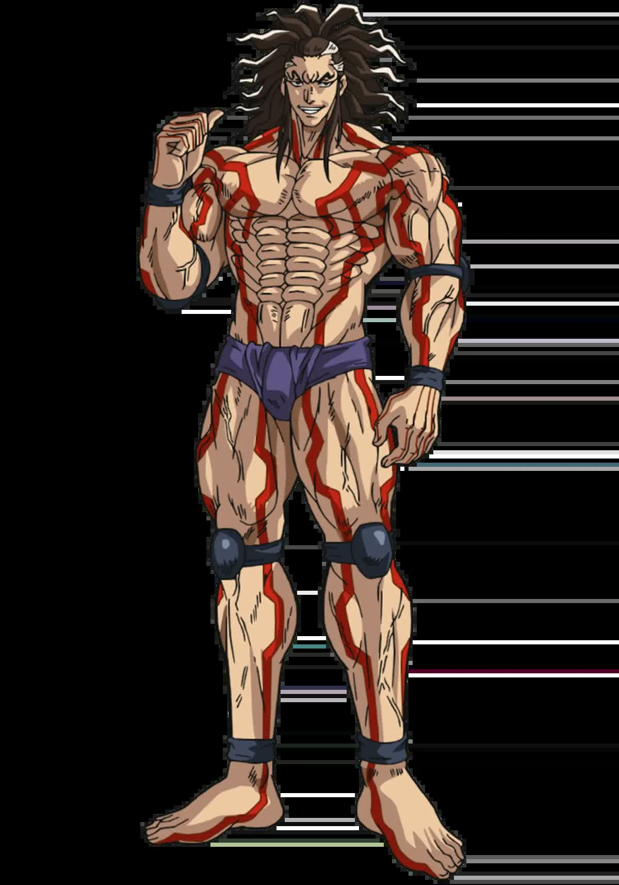

Hundred Seals Physique
Two hundred and fifty-four bouts. Ten draws. Zero losses. Death had to cheat — it couldn't beat him in the ring.

Hundred Seals Physique
Two hundred and fifty-four bouts. Ten draws. Zero losses. Death had to cheat — it couldn't beat him in the ring.
Feature map
Level-by-level features, as the figure refined them.
The Muscle Map
Passive.
Twelve Muscle Bands across four regions — Left Arm, Right Arm, Legs, Frame — default 3/3/3/3. Bands are never spent; all twelve always exist unless capacity damage applies. Arm: 1 — disadvantage on arm attacks and Athletics, no two-handed support; 2 — basic function; 3 — balanced; 4 — advantage on arm Athletics, once per turn one direct attack gains +PB damage (not multiplied on crits). Legs: 1 — speed −20, standing costs your remaining movement; 2 — speed −10; 3 — balanced; 4 — speed +10, advantage vs. prone, jumps doubled. Frame: 1 — −2 AC, disadvantage on Con saves and vs. forced movement; 2 — −1 AC; 3 — balanced; 4 — +1 AC, advantage vs. forced movement and prone. This technique never modifies ability scores.
Muscle Migration
Bonus action.
Move up to PB Bands between regions, obeying capacity limits. Strength is never created, only moved.
The Forbidden Four
Replace one attack (each gated on body configuration).
Harite (arm 4+): on hit, Con save or the target loses reactions until your next turn and your next attack against it gains +2 to hit. Sabaori (arms total 7+, frame 3+, requires grapple): Str save or take your unarmed damage, fall prone, and remain grappled. Kannuki (both arms 4+, on a successful grapple): Str save or both arms are locked — no two-arm attacks, no hand or somatic components requiring those limbs, disadvantage to escape; repeat the save at end of turn. Limb-gated interference only: this never generically suppresses cursed techniques. Teppo (legs 4+ and arm 4+): move 10+ ft toward the target; on hit +PB damage; Str save or pushed 10 ft.
Full Muscle Control
Passive.
Max region capacity becomes 5. Overpressure: strenuous use of a 5-Band region deals PB internal damage afterward — cannot be resisted or redirected. 5-Band Arm: first direct attack per turn +2×PB damage; grapple one size larger than normal. 5-Band Legs: speed +20, no running start for jumps, first leg-driven attack per turn +PB damage. 5-Band Frame: +2 AC, advantage on Str/Con saves, count one size larger vs. forced movement. Instant Migration: once per turn before one attack, Athletics check, or Str/Con save, move 1 Band without an action and resolve with the new configuration. Wild Boar (arm 5+ and grapple, 2 CE, replace one attack): Con save or 2×PB + Str/CE modifier bludgeoning, and attacks primarily using that limb have disadvantage until your next turn. Miyama (reaction, 2 CE, when hit by melee): migrate 1 Band into each Arm from legal regions; reduce the damage by the total Bands in both Arms + PB (typed as damage reduction).
Hundred Seals Release
Bonus action · 4 CE · 1 minute.
Region capacity becomes 6; Instant Migration moves 2 Bands. Forbidden Output: strenuous use of a 6-Band region deals 2×PB internal damage afterward. 6-Band Arm: first direct attack per turn +3×PB damage, ignoring bludgeoning resistance. 6-Band Legs: speed +30; cannot be knocked prone while grounded unless incapacitated; first leg-driven attack per turn +2×PB damage. 6-Band Frame: +3 AC, advantage on Str/Con saves; while grounded you cannot be forcibly moved unless a hostile effect wins a contest against your technique DC — maintaining this through the end of your turn causes Forbidden Output damage.
The Peerless Rikishi
Passive.
Perfect Migration: at the start of each of your turns, redistribute any number of Bands once without an action. No More Holding Back: once per turn, the first strenuous use of a 5-Band region causes no Overpressure damage (6 Bands still hurts). Forbidden Technique Mastery: the Forbidden Four no longer replace an attack when their triggering movement or grapple naturally fulfills the condition; each remains once per turn.
Maximum, Domain, or equivalent.
Capstone material.
Yatagarasu (The Three-Legged Crow)
Requires Legs ≥ 5 Bands and striking Arm ≥ 4. Move 10+ ft directly toward the target as part of the action. Final Migration: every Band in your Legs above 1 migrates into the striking Arm (it may exceed the 6-Band limit for this attack only). One direct unarmed attack: on hit, add PB damage per Band in the striking Arm; then Str save or be pushed 30 ft, knocked prone, and lose reactions until your next turn; blocking or parrying damage reduction is halved against the strike. Recoil: you take 10% of your max HP as damage and the striking Arm's maximum capacity drops by 1 for the rest of the encounter (Muscular Rupture — RCT heals the HP, not the capacity). Redistribute into a legal body afterward; you choose the post-attack configuration.
Yokozuna, At Last
The rank denied, finally taken. Your Muscle Migration may move up to PB+2 Bands, region capacity becomes 7, and once per long rest you may use Yatagarasu without the Release requirement — the bout, on his terms at last.
Build-defining options.
Historical-figure techniques grant no feats — the figure's art is complete as written, and the builder's feat picker excludes these techniques. Take the progression as the build.